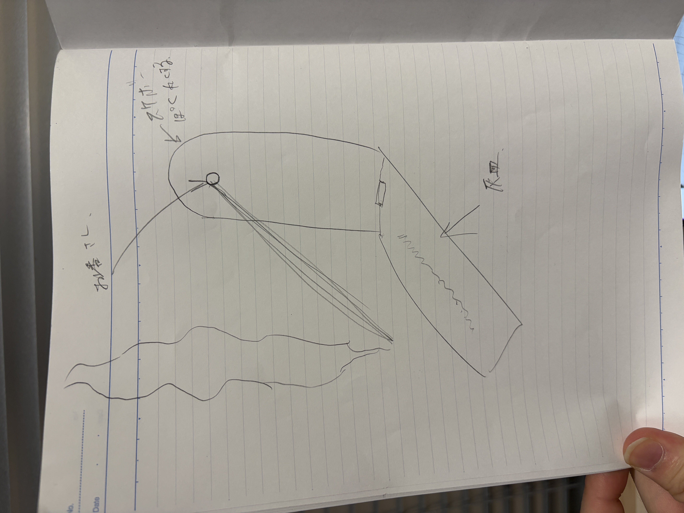
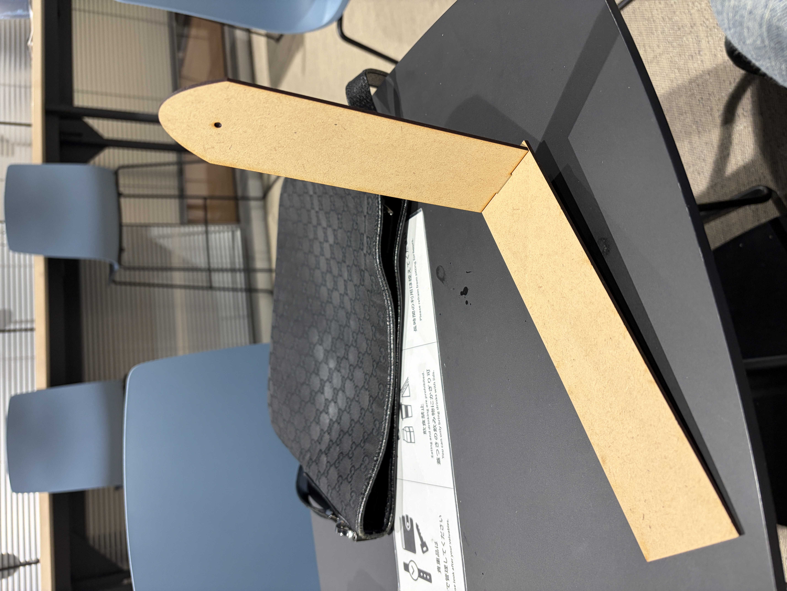

スケッチ

ふつうのお香立ては面白みがなく香りと見た目を楽しめるお香立てを作りたいと思い作った。
実際に作ったもの

（工夫したところは上のスケボーの板の部分を下の板にはめ込む際、先生が言っていたようにほんの数ミリ上の板を
小さくして板の高さが2.5㎜だったので下の板を3㎜で切りました。）
DXFファイル
DXFファイル
感想
- 最初はイメージするのが難しく、何を作ろうかとても考えました。そしてせっかくなら作ることで
新しいことができる、新たな感性が生まれるものを作りたいと思いました。
レーザーカッティングは初めて使い、ヒュージョンからデータを作り、イラストレーターで赤線を弾くという工程が難しく
fabラボの先生方に教えていただきながら制作しました。サイズや部品の選択などで試行錯誤したが、初めてにしてはよくできたと思いました。
香りだけではなく見た目も楽しめるお香立てができてよかったです。